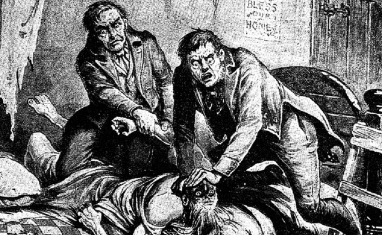
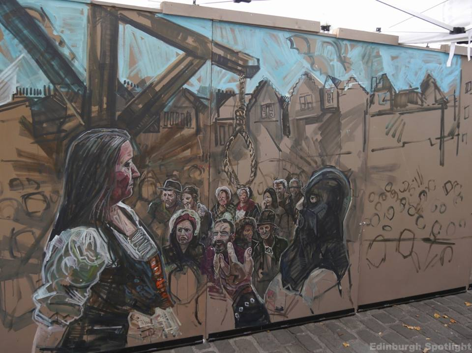

Ciudad de Edimburgo
Envuelta en un halo de misterio, la ciudad de Edimburgo es una mina de oro para los cazadores de historias. Sus pedregosas calles, generalmente húmedas y ennegrecidas, han cautivado a algunos de los escritores más ilustres. Walter Scott, Louis Stevenson, J.K Rowling o Robert Burns se han empapado de historias y leyendas que, sean ciertas o no, les ha llevado a crear algunos de los títulos más aplaudidos de la literatura universal. Hablamos de Dr Jekyll y Mr Hyde, Harry Potter o La isla del Tesoro, entre otros muchos.
Las leyendas sobre Edimburgo circulan de boca a oreja desde tiempos memorables. Hoy, se reproducen en cualquiera de los tours que recorren sus calles, algunos de ellos invitándonos a conocer las partes más bajas de la ciudad donde, en la Edad Media, murieron miles de personas a causa de la peste negra. Los más desfavorecidos como los pobres, prostitutas o mendigos fueron encerrados en estas calles del subsuelo para evitar que contagiasen al resto de la población. El número de afectados cada vez era mayor y acabó convirtiéndose en una ciudad subterránea. Precisamente aquí es donde encontramos una de las historias más terroríficas de la ciudad.
Mary Kings Close es una de las partes subterráneas actualmente más populares, pues es donde más gente sufrió por la plaga. Cuando pasado un tiempo se abrieron las puertas que daban al subsuelo para limpiar la zona de cadáveres, es donde se contabilizaron más muertos. Desde entonces, según las leyendas de Edimburgo, se oye la voz de una niña, Annie, quien murió enferma en 1645. La historia la dió a conocer una medium japonesa que insistió en que la voz que se escuchaba era de ella porque buscaba su muñeca. Hoy, Mary Kings Close está abierta al público para que los viajeros puedan pasear por sus túneles. Lo más sorprendente es que la habitación de la niña cada vez cuenta con más muñecas que le van dejando los visitantes.
Es la mascota de la ciudad, un Sky Terrier que encontramos inmortalizado frente a la cafetería donde J.K Rowling iba a escribir su saga de Harry Potter. Una escultura que, si bien no pasa desapercibida para ningún viajero, para conocer realmente su historia hay que adentrarse hasta el cementerio Greyfriars. Aquí encontraremos dos tumbas que llevan su nombre. Una justo a la entrada, rodeada de peluches y juguetes, le rinde homenaje. La segunda de ellas, junto a la de un hombre, es donde realmente se encuentra enterrado. Según la leyenda, cuando a Bobby se le murió su amo su tristeza era tan grande que se fue a vivir con él al cementerio. Allí estuvo día y noche, junto a su lápida, hasta que él también se murió. Una bonita historia de fidelidad.
Se dice que la historia de Burke y Hare pudo haber influido en Stevenson a la hora de escribir Doctor Jekyll y Mr Hyde. Según la leyenda, estos dos delincuentes escoceses se dedicaban a profanar las tumbas de los muertos, pues era época de hambruna y la facultad de Medicina de Edimburgo pagaba a buen precio los cuerpos para estudiarlos. Una vez levantaron algunos de ellos, muchas de las lápidas del cementerio empezaron a ser valladas. De hecho, hoy algunas de ellas continúan así. Aquello no fue un impedimento para Burke y Hare, quienes comenzaron a asesinar a personas que nadie fuera a echar de menos como mendigos, prostitutas o drogadictos. Al final, Hare acabó delatando a Burke, quien acabó ahorcado en la plaza de Grassmarket.

>La historia de hoy se sitúa allá por el siglo XVIII, concretamente en 1720. Y su protagonista Maggie Dickson, es conocida a causa de las múltiples desgracias que acontecieron durante su vida.
Maggie Dickson era una chica de Edimburgo, de clase media. Se casó a temprana edad con un pescador que le prometió una vida relativamente buena y estable, pero el hombre con el que se casó no la amaba realmente y terminó por abandonarla.
En aquella época estaba muy mal visto que un hombre abandonara a su mujer y es por eso por lo que Maggie decidió marcharse de Edimburgo, pues entonces el divorcio volaba por su ausencia y cuando una pareja se casaba, era para tooooda la vida, "hasta que la muerte os separe".
Así pues, en 1723 Maggie marchó en busca de una nueva vida, a un lugar donde nadie la conociera y ese lugar fue Kelso, un pequeño pueblecito al sur de Edimburgo. Allí consiguió un trabajo en una posada donde el posadero le ofreció a cambio de limpiar y trabajar para él, alojamiento y alimentos.
Allí conoció al hijo del posadero, un apuesto chico con el cual tuvo un romance, en secreto claro, para no perder su trabajo y en consecuencia el alojamiento si llegaba a oídos del posadero, pero con tan mala suerte, digámoslo así, que quedó embarazada. Pasaron unas semanas después de otras y fueron muchas las peripecias que Maggie tuvo que hacer para ocultar su estado, pero lo consiguió, aunque no tuvo que esperar demasiado ya que el bebé nació prematuro y para su desgracia, muerto.
A pesar de todo, era lo mejor que le podía pasar ya que en su "nueva vida" Maggie era una chica soltera, ¿qué pensaría la gente? así pues, se decidió a deshacerse del bebé, sin dar a conocer ni su existencia ni mucho menos su muerte y marchó hacía el río Tweed con la intención de hacerlo desaparecer entre sus aguas, pero una vez allí se vio incapaz de soltar a su hijo y rompió a llorar desolada por todas las desgracias que le estaban ocurriendo. De repente unas voces alertaron a Maggie, un hombre la había visto y se acercaba hacia ella, Maggie dejó el bebé a la orilla del río y salió corriendo, pero no llegó muy lejos cuando fue capturada. En aquella época, podía considerarse delito cualquier cosa, ¿por qué pensáis que sería juzgada? adulterio? asesinato tal vez? pues no, Maggie Dickson fue condenada a ser ahorcada por ocultación de embarazo, ya que permanecer en este estado y ocultarlo estaba penado con la horca. El 2 de septiembre de 1724 en Grassmarket (Edimburgo) se procedió a ejecutar la sentencia de Maggie. Como era la costumbre, a la condenada le concedieron su última voluntad, una copita de whisky y minutos más tarde fue ahorcada a la vista de todo el pueblo de Edimburgo. Después de certificar su muerte, el cuerpo fue trasladado para ser sepultado, tras él como si de una procesión se tratara, se dirigía el pueblo para ver la sepultura y así dar por concluido el acto, pero de camino al cementerio empezaron a escucharse gritos y golpes que venían del ataúd, la gente estaba desconcertada ¿sería posible? Efectivamente! tras abrir el ataúd de madera, allí estaba Maggie más que viva. En cuanto se dieron cuenta de la realidad, el pueblo no daba más de si, eufóricos volvieron a Grassmarket, verían dos ejecuciones el mismo día! El whisky y la cerveza corría por doquier, las risas y los comentarios eran ensordecedores, la pobre Maggie, desgraciada como ninguno se disponía a ser ahorcada por segunda vez cuando de repente, una voz rompió el silencio de los atentos espectadores, y un hombre pronunció estas palabras "por voluntad divina esta mujer no ha muerto al ser sentenciada, no es justo volver a juzgarla por un delito por el cual ya ha sido juzgada".
Maggie Dickson había sido condenada a la horca y no a muerte, así que, puesto que ya había sido ahorcada su delito había sido pagado y ahora Maggie era inocente y como se presuponía que tras el ahorcamiento llegaba la muerte, el "hasta que la muerte os separe" también se había dado por hecho, por lo tanto Maggie además de ser inocente ahora también volvía a ser libre para rehacer su vida si así lo deseaba.
Con una copita de más en el cuerpo y casi sin poder creérselo Maggie bajó de la tarima y dio gracias a Dios por haberle perdonado la vida. A partir de ese día Maggie fue muy conocida por todos y le otorgaron el nombre de Half Hangit Maggie (Maggie la medio colgada).
Maggie Dickson volvió a Edimburgo y muchos cuentan que se casó con el hombre que la salvó de la muerte, compró una casa en Grassmarket con vistas al escenario de su ejecución y vivió allí durante 40 años más.
Dicen que Maggie sobrevivió porque conocía al cordelero que suministraba las sogas y la ruptura precoz de la cuerda le permitió sobrevivir, otros, que en el último momento sedujo al verdugo para que realizara un nudo flojo. No importa cual fue la razón de su supervivencia, la cuestión es que su historia se recuerda hoy y es homenajeada a través del pub Maggie Dickson, ubicado justo en la casa donde vivió el resto de sus días.

Este código fue encontrado en la montaña llamada Arthur Seat. Escondida dentro de una caja, aún no se ha podido descifrar su contenido. Algunos postulan que se trata de un código alienígena, mientras que otros lo achacan a la perdida Atlantida.
| Elemento | Atributo | Pagina Web | Línea |
| < html > | - | Edimburgo.xhtml | 4 |
| < html > | xmlns | Edimburgo.xhtml | 4 |
| < head > | - | Edimburgo.xhtml | 5 |
| < title > | - | Edimburgo.xhtml | 6 |
| < body > | - | Edimburgo.xhtml | 8 |
| < body > | bgcolor | Edimburgo.xhtml | 8 |
| < p > | - | Edimburgo.xhtml | 14 |
| < p > | align | Edimburgo.xhtml | 14 |
| < hi > | - | Edimburgo.xhtml | 10 |
| < i > | - | Edimburgo.xhtml | 15 |
| < hr > | - | Edimburgo.xhtml | 17 |
| < map > | - | Edimburgo.xhtml | 18 |
| < map > | name | Edimburgo.xhtml | 18 |
| < area > | - | Edimburgo.xhtml | 19 |
| < area > | title | Edimburgo.xhtml | 19 |
| < area > | shape | Edimburgo.xhtml | 19 |
| < area > | coords | Edimburgo.xhtml | 19 |
| < img > | - | Edimburgo.xhtml | 25 |
| < img > | alt | Edimburgo.xhtml | 25 |
| < img > | src | Edimburgo.xhtml | 25 |
| < img > | usemap | Edimburgo.xhtml | 25 |
| < img > | width | Edimburgo.xhtml | 96 |
| < img > | height | Edimburgo.xhtml | 96 |
| < b > | - | Edimburgo.xhtml | 28 |
| < br > | - | Edimburgo.xhtml | 40 |
| < table > | - | Edimburgo.xhtml | 42 |
| < table > | border | Alrededores.html | 38 |
| < table > | cellspacing | Alrededores.xhtml | 38 |
| < caption > | - | Edimburgo.xhtml | 43 |
| < caption > | align | Edimburgo.xhtml | 43 |
| < thead > | - | Edimburgo.xhtml | 46 |
| < tbody > | - | Edimburgo.xhtml | 47 |
| < tr > | - | Edimburgo.xhtml | 49 |
| < td > | - | Edimburgo.xhtml | 51 |
| < th > | - | Alrededores.xhtml | 42 |
| < th > | colspan | Alrededores.xhtml | 54 |
| < th > | rowspan | Alrededores.xhtml | 54 |
| < tfoot > | - | Edimburgo.xhtml | 133 |
| < embed > | - | Edimburgo.xhtml | 111 |
| < embed > | autostart | Edimburgo.xhtml | 111 |
| < embed > | hidden | Edimburgo.xhtml | 111 |
| < meta > | - | Bares.html | 7 |
| < meta > | charset | Bares.html | 7 |
| < dl > | - | Bares.html | 34 |
| < dt > | - | Bares.html | 35 |
| < dd > | - | Bares.html | 36 |
| < ul > | - | Bares.html | 45 |
| < ol > | - | Bares.html | 46 |
| < li > | - | Bares.html | 47 |
| < a > | - | Bares.html | 137 |
| < a > | href | Bares.html | 137 |
| < a > | title | Bares.html | 139 |
| < form > | - | Alrededores.xhtml | 70 |
| < form > | action | Alrededores.xhtml | 70 |
| < form > | method | Alrededores.xhtml | 70 |
| < fieldset > | - | Alrededores.xhtml | 71 |
| < legend > | - | Alrededores.xhtml | 72 |
| < input > | - | Alrededores.xhtml | 74 |
| < input > | type | Alrededores.xhtml | 74 |
| < input > | size | Alrededores.xhtml | 74 |
| < input > | name | Alrededores.xhtml | 91 |
| < input > | value | Alrededores.xhtml | 91 |
| < input > | placeholder | Contacto.html | 40 |
| < input > | pattern | Contacto.html | 40 |
| < input > | required | Contacto.html | 40 |
| < input > | checked | Contacto.html | 48 |
| < select > | - | Alrededores.xhtml | 74 |
| < select > | name | Alrededores.xhtml | 74 |
| < option > | - | Alrededores.xhtml | 75 |
| < option > | value | Alrededores.xhtml | 75 |
| < textarea > | - | Alrededores.xhtml | 101 |
| < textarea > | rows | Alrededores.xhtml | 101 |
| < textarea > | cols | Alrededores.xhtml | 101 |
| < textarea > | name | Alrededores.xhtml | 101 |
| < button > | - | Alrededores.xhtml | 114 |
| < button > | type | Alrededores.xhtml | 114 |
| < button > | value | Alrededores.xhtml | 119 |
| < button > | onclick | Alrededores.xhtml | 119 |
| < iframe > | - | Lugares.xhtml | 34 |
| < iframe > | frameborder | Lugares.xhtml | 34 |
| < iframe > | allow | Lugares.xhtml | 34 |
| < iframe > | autoplay | Lugares.xhtml | 34 |
| < hi > | id | Leyendas.html | 55 |